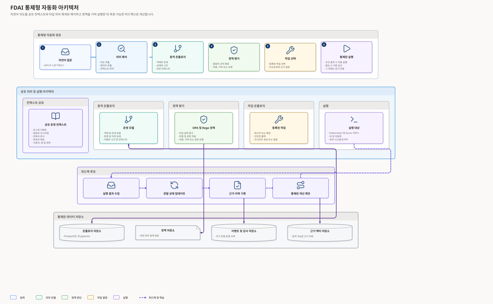

Forward Deployed Agents | L100
판단과 책임을 연결하는
자율 클라우드 운영
반복되는 운영 업무는 일관되게 처리하고,
중요한 결정은 사람과 함께 관리합니다.
Forward Deployed Agents | L100
반복되는 운영 업무는 일관되게 처리하고,
중요한 결정은 사람과 함께 관리합니다.
Agenda
FDAI가 운영 신호를 판단과 실행으로 연결하는 방법부터 도입 절차까지 살펴봅니다.
제품과 과제
작동 방식과 지식
에이전트와 책임
성과와 도입
Part 1 | Introduction
01클라우드 운영의 신호와 기준을 하나의 실행 가능한 흐름으로 연결합니다.
Why FDAI
리소스 상태, 변경 기록, 비용과 운영 목표를 여러 도구에서 따로 확인해야 합니다.
운영 기준은 정책, 매뉴얼, 담당자의 경험과 이전 사례에 나뉘어 있습니다.
운영 규모와 속도가 커질수록 수동 분석과 인력 추가만으로 대응을 지속하기 어렵습니다.
Product Overview
FDAI는 클라우드 환경을 지속적으로 관찰하고, 운영 기준과 현재 상황을 함께 살펴 적절한 대응을 제안하거나 수행합니다.
현재 구현 대상은 Azure이며, 핵심 판단 계약은 클라우드 공급자와 분리되어 있습니다.
05AIOps Evaluation Framework
리소스, 서비스, 변경, 비용과 사용자 영향 정보를 같은 시간선에서 연결합니다.
FDAI: typed event와 운영 온톨로지어떤 규칙과 근거를 사용했는지 보여 주고, 새로운 판단은 검증을 거칩니다.
FDAI: T0/T1/T2와 quality gate관찰, 판단, 실행과 감사를 분리하여 각 기능을 독립적으로 개선할 수 있습니다.
FDAI: 15개 역할과 이벤트 기반 협업이상을 찾는 데서 끝나지 않고 대응, 실행, 효과 확인과 학습까지 연결합니다.
FDAI: observe-to-learn control loop운영자는 자연어와 콘솔을 통해 상태, 이유, 다음 단계와 측정 결과를 확인합니다.
FDAI: Bragi, Console과 Outcome Assurance참고 관점: Juniper Networks, "AIOps에 대해 알아야 할 5가지" (2022). FDAI의 운영 범위와 책임 모델에 맞게 재구성했습니다.
06Operating Domains
Resilience
장애 대응, 재해 복구와 복구 훈련을 실제 결과 검증까지 연결합니다.
Change Safety
설계 기준, 정책과 변경 결과를 연결하여 더 일관된 변경 판단을 지원합니다.
Cost Governance
서비스 목표를 유지하면서 비용 이상과 용량 최적화 기회를 관리합니다.
Reference Architecture

Control Loop

Decision Tiers
Two Independent Axes
판단 방식
어떤 방법과 근거를 사용해 대응 후보를 만들었는지 설명합니다.
책임 범위
현재 정책과 담당 체계에서 어떤 수준의 작업을 수행할 수 있는지 설명합니다.
Authority Classes
A3-E는 목표 설계이며 현재 실행 가능한 운영 경로는 계획 단계입니다.
12Knowledge and Meaning
RAG
규칙, 정책, 매뉴얼과 이전 사례에서 현재 상황을 설명하는 근거를 검색하고 인용합니다.
Operating Ontology
서비스, 리소스, 의존 관계, 목표, 관찰 결과와 작업의 의미를 공통 언어로 표현합니다.
Operational Knowledge
Input
Runbook, 정책 문서, 배포 절차와 아키텍처 기준을 수집합니다.
Distillation
Runtime
버전과 출처가 관리되는 T0/T1 지식으로 운영에 적용합니다.
Part 2 | Agent Organization
02각 에이전트는 하나의 책임과 정해진 쓰기 권한을 가집니다.
Agent Pantheon
Agent Responsibilities
Agent Collaboration
정보는 필요한 여러 역할에 전달될 수 있지만, 권위 있는 결과를 작성하는 주체는 하나입니다.
Execution Assurance
Ownership Handover
기존 담당자는 반복 작업을 직접 수행하는 대신 운영 기준을 관리하고, 중요한 판단을 검토하며, 필요한 경우 에스컬레이션을 받습니다.
담당 체계는 누가 책임지고 연락받는지를 정합니다. 실행 권한은 별도의 역할과 정책에서 결정합니다.
Operational Continuity
어떤 정보와 역할을 사용할 수 있는지 확인하고 영향을 받는 운영 흐름을 구분합니다.
추가 판단이 필요한 작업은 대기하거나 사람에게 연결합니다. 관찰과 조회는 가능한 범위에서 계속합니다.
보존된 이벤트와 감사 이력을 사용하여 중복 없이 운영 흐름을 다시 시작합니다.
Operational Demo
현재 근거: Azure 장애 시나리오 10종의 주입, 탐지와 원복 검증. 자동 판단 범위는 관찰 모드와 실제 적용 결과를 구분해 표시합니다.
Expected Outcomes
사람의 추가 판단 없이 종결된 이벤트 비율을 측정합니다.
감지부터 검증된 복구까지 걸린 시간을 비교합니다.
변경 요청부터 적용과 결과 확인까지의 시간을 측정합니다.
이벤트 100개당 필요한 승인과 수동 판단 횟수를 확인합니다.
개선 배수는 달성 수치가 아니라 검증할 목표입니다. 동일한 시나리오, 측정 기간과 기준선을 사용한 결과만 성과로 보고합니다.
23Adoption
FDAI | Summary
FDAI는 더 많은 일을 자동화하는 것에 그치지 않고, 판단 근거와 책임을 운영 흐름 안에 남깁니다.